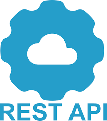

Developing in Tock Bot API mode
Tock's Bot API mode allows you to develop bots by connecting to a Tock Studio platform using Tock's conversational REST API.
It is therefore the recommended Tock development mode to get started, as well as in scenarios where shared access to the database would be an issue.
Only Bot API mode is available on the public Tock demo platform platform.
This page presents Tock bot development in Bot API mode in Kotlin. Clients are also available for Javascript/Node and Python. It is possible to develop Tock courses in any language via the Bot API.
 {style="width:50px;"}
{style="width:50px;"}
 {style="width:50px;"}
{style="width:50px;"}
 {style="width:50px;"}
{style="width:50px;"}
{style="width:50px;"}
Another section presents the Bot Framework mode available for Kotlin only, more integrated but also more coupled with the Tock platform.
Connect to the demo platform
Rather than deploying your own Tock platform, it is possible to test the WebSocket or Webhook modes directly on the Tock demo platform.
Develop in Kotlin
{style="width:100px;"}
Enable WebSocket mode
This is the mode to use at startup because it is the easiest to implement.
To use the websocket client, you must add the tock-bot-api-websocket dependency to your Kotlin application/project.
For example in a Maven project:
<dependency>
<groupId>ai.tock</groupId>
<artifactId>tock-bot-api-websocket</artifactId>
<version>24.9.4</version>
</dependency>
Or in a Gradle project:
compile 'ai.tock:tock-bot-api-websocket:24.9.4'
Enable WebHook mode
Alternatively, you can choose to use the WebHook client, you need to add the dependency tock-bot-api-webhook to your Kotlin application/project.
For example in a Maven project:
<dependency>
<groupId>ai.tock</groupId>
<artifactId>tock-bot-api-webhook</artifactId>
<version>24.9.4</version>
</dependency>
Or in a Gradle project:
compile 'ai.tock:tock-bot-api-webhook:24.9.4'
In this case, unlike in WebSocket mode, the application/bot started must be reachable by the Tock platform via a public URL (you can use for example ngrok).
This URL must be specified in the webhook url field in the Configuration > Bot Configurations view of the Tock Studio interface.
Set the API key
In Tock Studio, after configuring a bot, go to Configuration > Bot Configurations and copy the API key of the bot you want to connect to.
You will be able to enter/paste this key into the Kotlin code (see below).
Créer des parcours en Kotlin
Pour le moment, les composants suivants sont supportés pour les réponses :
- Texte avec Boutons (Quick Reply)
- Format "carte"
- Format "carousel"
- Formats spécifiques aux différents canaux intégrés
Voici un exemple de bot simple avec quelques parcours déclarés :
fun main() {
startWithDemo(
newBot(
"PUT-YOUR-TOCK-APP-API-KEY-HERE", // Retrieve the API key from the "Bot Configurations" tab in Tock Studio
newStory("greetings") { // Intention 'greetings'
end("Hello!") // Simple text response
},
newStory("location") { // Intention 'location'
end(
// Response with a card - including text, an attachment (e.g., an image), and suggested user actions
newCard(
"Card Title",
"A subtitle",
newAttachment("https://url-image.png"),
newAction("Action 1"),
newAction("Action 2", "http://redirection")
)
)
},
newStory("goodbye") { // Intention 'goodbye'
end {
// Messenger-specific response
buttonsTemplate("Are you sure you want to leave?", nlpQuickReply("I'll stay"))
}
},
// Bot response in case of misunderstanding
unknownStory {
end("I didn't understand. But I'm learning every day :)")
}
)
)
}
The full source code of the example is available.
Developing in Javascript
{style="width:50px;"}
A client is provided to develop Javascript courses with Nodejs.
For more information, see the documentation on the tock-node repository.
Developing in Python
{style="width:50px;"}
A client is provided for developing courses in Python.
For more information, see the documentation on the tock-py repository.
Develop via API
{style="width:50px;"}
It is possible to develop Tock courses in any language, by interfacing directly with the API.
Install Bot API on the server side
To use Tock's Bot API mode, a specific module must be deployed with the platform. Generally called
bot-api in Docker Compose descriptors for example, this service has the role of:
- Exposing the Bot API to potential clients regardless of their programming language
- Accepting WebSocket connections and/or connecting to the configured webhook
The guide Deploying Tock with Docker or the chapter Installation show how to deploy this module if necessary.
The only modification required compared to the example code for the demonstration platform is to replace
the startWithDemo method with start, specifying if necessary the address of the bot-api server.